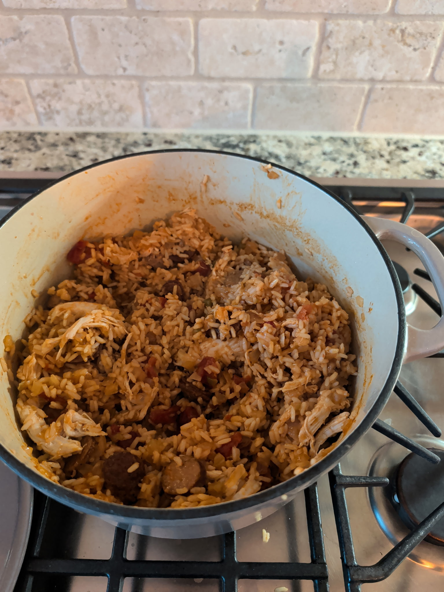

Home
Charles's Jambalaya

Charles's Jambalaya is a specialty dish for occasions any time of the year.
Whether it be the middle of Summer or the night before Christmas this is a
dish worth salivating over.Fill up your stomach with hearty and healthy
ingredients that will recharge your mind and body and rejuvenate your soul.
It is a relatively economical dish that does not dig too deeply into your wallet
and is also a dish that allows flexibility with ingredients.
Ingredients needed
- Cooking Oil
- Andouille Sausage
- Rotisserie Chicken
- Minced Garlic
- Tomato Paste
- Diced Tomatos
- Chicken Broth
- Cajun Seasoning
- Bay Leaves
- Rice
- Worcestershire Sauce
- Louisiana Hot Sauce
- One Onion
- One Green Pepper
- One Stalk of Celery
Steps to make Charles's Jambalaya
- Chop your sausage
- Chop your onion, green pepper, and celery to make your "trinity"
- Put a cup of oil into a large pot and dump your sauasge in and sear them
- Remove the sausage with a slotted spoon
- In the same pot, sautee your trinity
- Scrape up all of that "goodness" from the sausage and mix it into your veggies
- Add spoon of minced garlic and 2 tbsp of tomato paste
- Stir for a couple of minutes
- Add diced tomatos
- Add three and a half cups of chicken broth
- Add cajun seasoning and two bay leaves
- Give it a good stir and add two cups of uncooked rice
- Add a splash of worcestershire and Louisiana hot sauce for taste
- Bring to a boil
- Cover and simmer for 20-25 minutes
- Mix in your sausage and shredded chicken and let sit for five minutes
- Enjoy!